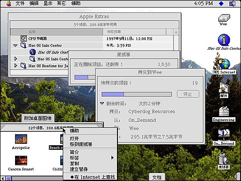

|
|
|
|
Finder
|
Óà Finder ¿É×öʲô£¿
Finder ÊÇÿ´ÎÆô¶¯¼ÆËã»úʱ×Ô¶¯´ò¿ªµÄ³ÌĞò¡£ËüÊǼÆËã»úµÄ»ùµØ¡£
ʹÓà Finder Ö´ĞĞ´óÁ¿µÄÈÎÎñ£¬°üÀ¨²é¿´Îļş¡¢´´½¨Îļş¼Ğ¡¢¿½±´ºÍÖØĞÂÃüÃûÎļşÒÔ¼°´ò¿ªÆäËü³ÌĞò¡£

Òª»ñÈ¡¸ü¶àĞÅÏ¢¡
Çë²é¿´ Mac OS ¸¨Öú¡£
Ö÷²Ëµ¥ | ·µ»Ø
- ı 1997 Apple Computer, Inc. All rights reserved.
- ı 1997 Æ»¹ûµçÄÔ¹ú¼ÊÓĞÏŞ¹«Ë¾£¬°æȨËùÓĞ¡£